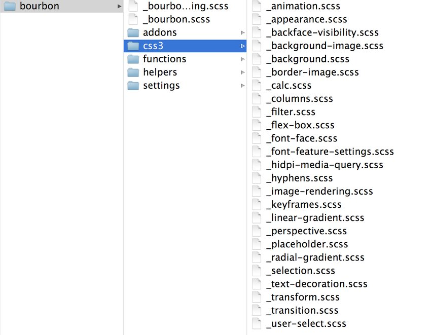
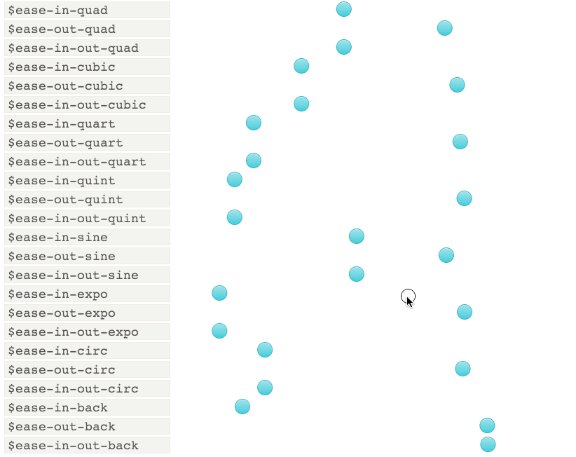

Представляем Bourbon: легковесные Sass миксины и не только
by Ed WassermannNov 26, 2015
Read Time:4 minsLanguages:
This post is part of a series called Bourbon: the Connoisseurs’ Choice for Sass Mixins.
A Taste of Bourbon’s Delicious Mixins
Russian (Pусский) translation by Nickita Chuhaj (you can also view the original English article)
Bourbon это первоклассная библиотека Sass миксинов для дизайнеров. Минималистический подход и серьезное отношение к созданию качественного кода с заботой о семантике. Bourbon поощряет наиболее эффективные пути к разработке масштабируемого кода.
Введение
На самом деле, являясь далеко не просто библиотекой миксинов, Bourbon вырос в небольшой набор проектов, поддерживаемых дизайнерами из thoughtbot. В предстоящих уроках я раскрою все нижеперечисленное более подробно:
Ну а сейчас - вот в чем суть:
Bourbon представляет собой небольшой, но "соблазнительный" набор миксинов и функций, добытых из различных источников Sass кода дизайнеров. Основная идея заключалась в централизации полезных миксинов, дабы избежать изобретения колеса снова и снова.
Neat это легкий фреймворк с сеткой для Sass. Он построен на основе Bourbon. Предпосылкой к его созданию послужила необходимость семантического подхода к разметке сайтов.
Refills это коллекция дизайнерских паттернов, с оформлением или без. Так же на основе Bourbon и Neat. В вашем распоряжении супер полезные сниппеты.
Bitters это набор из небольшого числа базовых стилей, переменных и немного структуры для новых Bourbon проектов. Позволяет втянуться в кратчаййшие сроки.
Bourbon: библиотека примесей для Sass
Оригинальный фреймворк Bourbon был выпущен в начале 2011 года автором Philip LaPier, на тот момент - дизайнером цифровой продукции. Проект начинался как объединение полезных миксинов от различных дизайнеров компании.
В настоящий момент Bourbon - это первоклассная библиотека для дизайнеров. Минималистический подход и серьезное отношение к созданию качественного кода с заботой о семантике. Мне он нравится особенно потому, что Bourbon поощряет наиболее эффективные пути к разработке масштабируемого кода.
Взятый на вооружение, он помогает писать код быстрее и справляться с многочисленными рутинными мелочами (вроде раздражающих вендорных префиксов). Миксины фреймворка часто выступают в роли "обертки" для вывода качетвенного CSS, но при этом остаются настолько простыми, насколько возможно, придерживаясь оригинального CSS синтаксиса.
Стоит отметить
Настройка
Ну что ж, приступим? Запускаем терминал (или командную строку), переходим в папку с вашим проектом и устанавливаем Bourbon с помощью RubyGems:
$ gem install bourbon
Примечание: Если вы не совсем комфортно себя чувствуете, используя командную строку, предлагаем оценить наш цикл для начинающих командная строка для веб-дизайна
Перейдите в папку с таблицами стилей и создайте папку bourbon.
$ bourbon install
Эта команда создает bourbon папку, которая содержит функции, миксины, вспомогательные классы и все настройки, который вам нужны. Я рекомендую вам не трогать эту папку, чтобы безболезненно обновлять Bourbon в будущем.
Закончите установку импортом созданных Sass файлов в вашу таблицу стилей. Импортируйте Bourbon в самый верх вашего application.sass файла. Все остальные Sass файлы необходимо импортировать ниже.
В файле application.sass:
@import 'bourbon/bourbon'
@import 'other-sass-partials-below'
Обзор миксинов Bourbon
Bourbon обладает широким спектром очень полезных миксинов для ускорения работы. С точки зрения дизайна, можно с уверенностью сказать, что создатели фреймворка стремятся поддержать ваши собственные дизайнерские решения в большей степени, чем ограничивать рамками определенного стиля. Вам предлагают создать свой собственный "коктейль", используя данные миксины как стабильную и относительно нейтральную базу.
Вот парочка миксинов, с которыми я рекомендую ознакомиться в первую очередь:
Мы узнаем больше об отдельных миксинах в будущих уроках.
Обзор функций Bourbon
Sass сам по себе уже имет массу встроенных функций. От манипулирования последовательностями, до игр с прозрачностью и цветом. Bourbon добавляет некоторое количество выборочных усовершенствований и предоставвляет очень полезные функции Sass для различных обстоятельств. К примеру:
Опять же, мы взглянем подробнее на функции Bourbon в дальнейшем.
Дополнения (аддоны) Bourbon
Bourbon определяет небольшие, но полезные наборы переменных по умолчанию, к примеру:
Переменные для списка безопасных шрифтов
Вместо обычного способа определени набора шрифтов:
font-family: "Helvetica Neue", Helvetica, Arial, sans-serif
с Bourbon вы используете одну из переменных семейства шрифтов:
font-family: $helvetica
Временные переменные
Бурбон предоставляет массу временных переменных, прямо из коробки. Миксин типа transition иммеет следующий синтаксис:
.some-element
+transition(all 5s $ease-in-circ)
// SCSS syntax
// .some-element {
@include transition(all 5s $ease-in-circ);
// }
Последний параметр определяет расчет времени (тайминг) через переменную. Вы можете точно настроить поведение перехода определяя однй из 24 переменных для контроля тайминга. Следующие GIF иллюстрирует варианты:
Заключение
Сделайте себе и своим коллегам отдолжение - дайте Bourbon шанс. Фреймворк уделяет большое внимание семантической разметке, и вместе с тем остается легковесным и простым. Он сослужит хорошую службу CSS архитектуре вашего проекта и поможет освоить и усовершенствовать наилучшие методы создания превосходного кода.
Присоединяйтесь ко мне в следующей части цикла, где я более детально взгляну на Bourbon миксины.